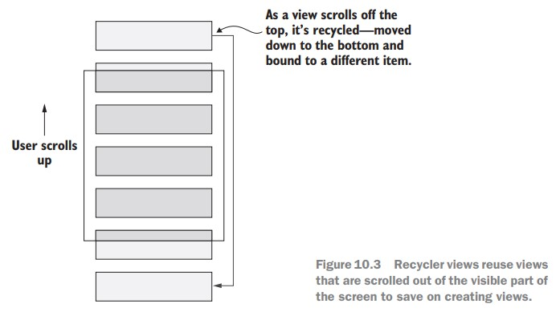

Recycler view는 설정할 많은 요소들이 있다. 레이아웃에 recycler view를 생성해야 하고 레이아웃 매니저, adapter, view holder를 설정할 필요가 있다. layout manager는 item들을 recycler view에서 레이아웃 하는 것을 맡고 있고, 안드로이드는 item을 레이아웃 하는데 vertical list와 grid를 제공하고 있다. adapter는 recycler view에서 사용자가 보길 바라는 item의 목록에 대해서 알아야 하고, 목록에 보여지는 view들이 생성되고 데이터가 바뀔 때마다 업데이트를 맡고 있다. view holder는 recycle하기 위해 목록에 있는 각 item들의 view를 저장하는 wrapper다.
Recycler view는 잘 작동하기 위해선 몇 가지 일을 해줘야만 하지만 MvvmCross는 recycler view의 implementation을 제공함으로써 힘든 일을 맡아준다. MvxRecyclerView는 observable collection에 대해서 알고 있는 adapter가 있다. 이는 자동으로 item을 보여줄 view를 생성하고 observable collection에서 item들을 binding한다. MvxRecyclerView는 view holder를 생성하고 관리한다. 우리는 그저 사용할 레이아웃 파일을 규정하면, MvxRecyclerView는 당신이 준 레이아웃을 inflating하고 collection의 item을 bind하기 위해 레이아웃 파일에 binding을 생성할 모든 view holder들을 생성한다. 
이 코드는 레이아웃에 recycler view를 추가해주고, frame layout에 이용가능한 공간을 채워주고 @+id/recycler_view ID를 준다. 그리고 MvxRecyclerView의 ItemsSource를 view model의 Counters property와 bind해준다. 이 때, Counters는 ObservableCollection<"CounterViewModel"> 의 type을 가진다. 이제 recycler view에게 CounterViewModel의 인스턴스를 어떤 방식으로 보여줄지 알려줘야 한다. 이를 위해 recycler view의 item template으로써 다른 레이아웃을 정의할 필요가 있다. 여기서 item template는 각 item들을 어떻게 보여주고 bind할 지를 묘사하는 layout resource를 나타내는 MvvmCross 용어이다. 자, 이제 item template를 위한 UI를 생성하는 것을 알아보자.